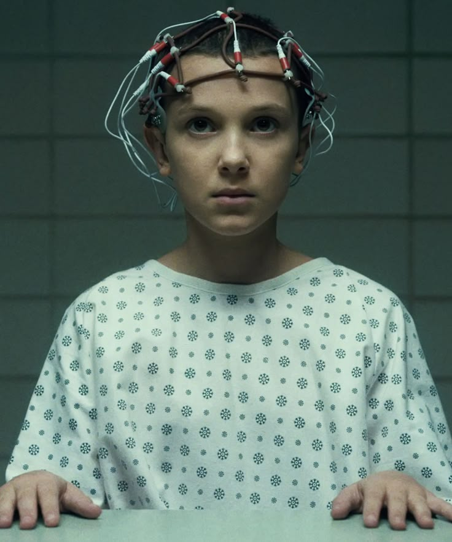
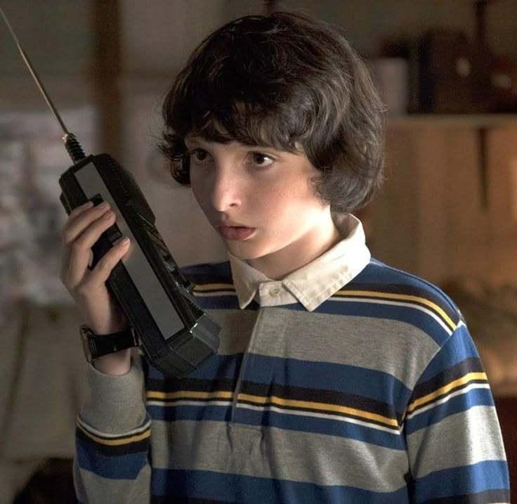
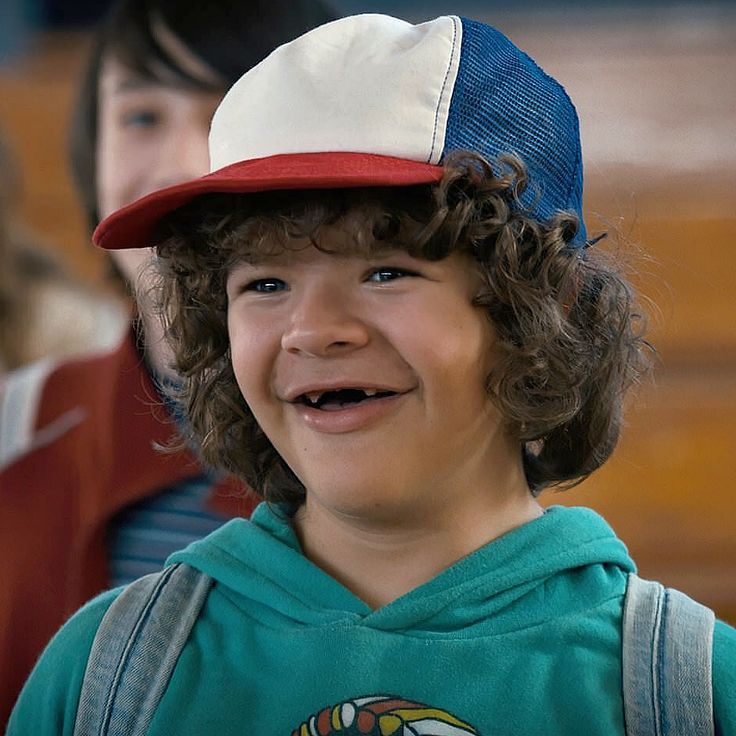
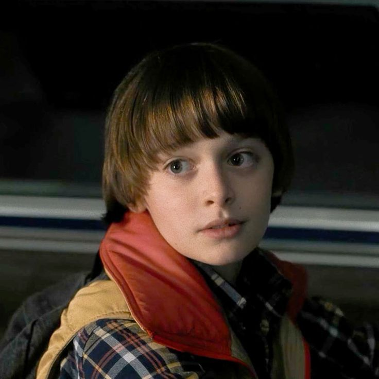
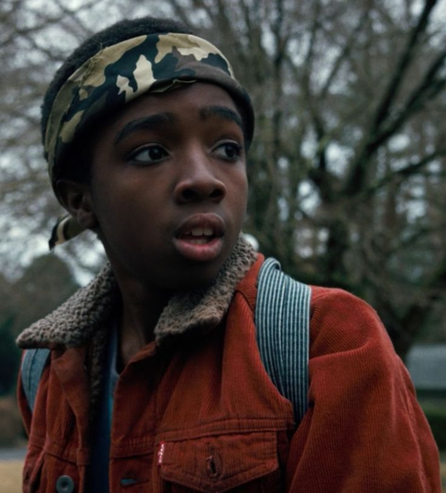
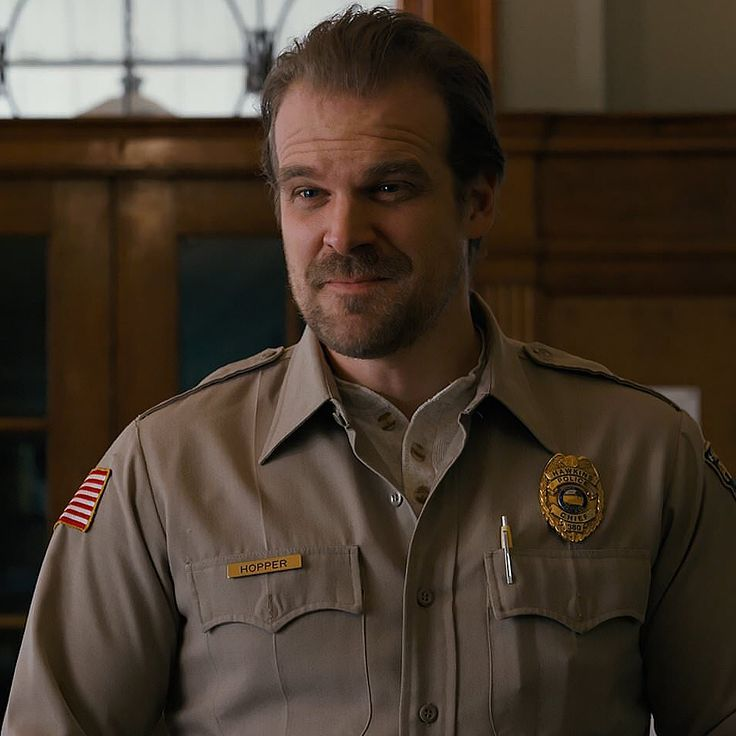

La serie cuenta con varios personajes principales que evolucionan a lo largo de las temporadas.
Eleven (Once), interpretada por Millie Bobby Brown, es una niña con poderes psíquicos que escapa de un laboratorio secreto.
Su historia es clave para entender los eventos sobrenaturales.

Mike Wheeler es uno de los líderes del grupo de amigos. Es sensible, valiente y muy leal, siempre dispuesto a ayudar a los demás.
Tiene un papel clave en la unión del grupo y en la confianza que desarrollan con Eleven.

Dustin Henderson es uno de los personajes más carismáticos. Se destaca por su inteligencia, su sentido del humor y su curiosidad científica.
Muchas veces aporta ideas importantes para resolver los problemas, además de darle un toque más liviano a la historia.

Will Byers es el personaje que inicia todo con su desaparición. Después de su regreso, queda conectado al “Upside Down”, lo que lo convierte en una pieza fundamental para entender lo que está pasando.
Su historia es una de las más sensibles y emocionales.

Lucas Sinclair es más racional y desconfiado al principio, pero con el tiempo demuestra ser un amigo muy fiel.
Aporta una mirada más realista frente a las situaciones peligrosas.

Jim Hopper, interpretado por David Harbour, es el jefe de policía de Hawkins.
Al principio parece un personaje solitario, pero con el tiempo se vuelve una figura protectora, especialmente para Eleven.
Su desarrollo es uno de los más profundos de la serie.

Joyce Byers, madre de Will, es un personaje clave en la historia. Es muy determinada y nunca deja de buscar a su hijo, incluso cuando nadie más cree en lo que está pasando.
Su intuición y fuerza la convierten en una de las adultas más importantes de la serie.